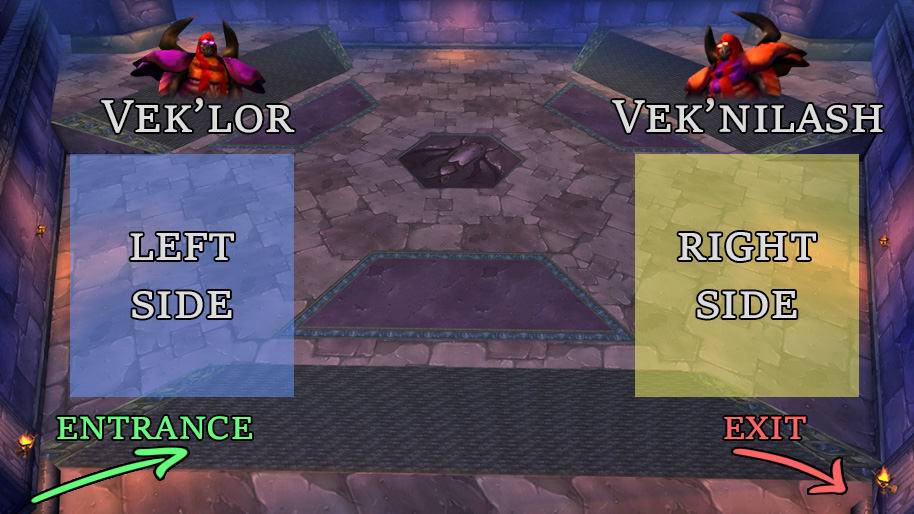
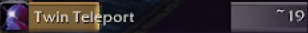
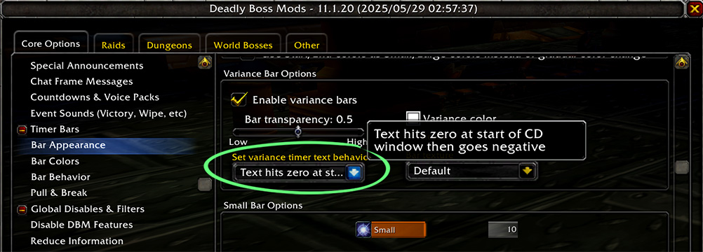

The novelty of a Warlock tank has made Twin Emps highly discussed. However, in my experience, it is by far the most consistent and easy role in the fight. That said, it is incredibly fun!
The primary goal of this guide is to coach anyone to be capable of performing the role in Hardcore, even if they have zero prior experience with AQ40 in any capacity. It provides a step-by-step explanation of how to perform the fight, as well as everything you need to know to prepare ahead of time.
The nature of Hardcore demands consistent strategies that work on the first try. For that reason, the same strategies can be applied by non-Hardcore (softcore) guilds who are progressing the raid. It is not the task of this guide to discuss parse strategies, instead aiming for an extremely simple, repeatable, methodology with as little movement and intricacy as possible.
Additionally, there are several non-trivial questions on which I hope to share my knowledge. In particular the matters of spell pushback mitigation, and Vek'lor's melee mode. The latter of which is still not fully understood.
0.2 About the Author
Who is esuvii? In short, I love HC WoW and my favourite class is Warlock! I played Warlock through 2019 Classic, TBC and WotLK. In mid-late 2020, I first tried Hardcore, largely inspired by watching B0aty play HCIM OSRS I attempted (and succeeded) to level a HC Hunter to 60. Later I began to actively play as a member of the Classic Hardcore community, and in November 2021 I joined the HC Road to Ragnaros event in Season of Mastery. Ever since then I've been raiding as a Warlock in HC Elite.
As of writing this, I've played Warlock on Twins Emps a minimum of:
32 times in softcore.
12 times in unofficial HC on BSB (including the first ever clear).
73 times in official HC on Defias Pillager (including the world first official clear).
During this time I have coached several Warlocks to tank Twins in HC, including those with zero experience.
We have NEVER had a Warlock tank die on Twins.
Through HC I have tanked in a BWL level SR set, absolute BiS SR gear, fresh 60 + crafted SR gear, and one time when I forgot to equip SR gear.
While there is no single highest authority on this fight, I believe there is a strong case that I have the most HC experience.
1. The Basics
Twin Emperors, as the name suggests, is a fight with two bosses: Vek'lor (caster boss), and Vek'nilash (melee boss). It is a required boss, situated after Huhuran, and opens the door which leads to Ouro and C'thun.

Fig 1: The Twin Emps boss room.
Here we see the boss starting positions, Figure 1. You will either be the "left side" or "right side" Warlock tank, and will stay within those areas. We'll see this in much more detail in the Positioning section.
The fight typically lasts between 3 to 5 minutes. It is not a DPS race, the enrage (Berserk) timer is 15 minutes - you must kill the bosses in this time, but that should not be an issue. Vek'lor and Vek'nilash share a percentage health pool, damage to one will hurt the other, so it is okay if your raid is heavily skewed towards magical or physical damage.
The final shared mechanic is Heal Brother. If the bosses are within 60 yds they will spam heal each other for 300k per cast. This is why we tank them on opposite sides of the room.
1.1 The Teleport
The most fundamental mechanic of this fight is the Twin Teleport. Perodically the bosses will Teleport, swapping positions. All Threat is reset, and whoever is closest to a boss will gain 2000 Threat for that boss. While you are waiting (AFK Phase), i.e. Vek'linash is on your side, you must ensure you are ready to begin tanking Vek'lor immediately after the Teleport.

Fig 2: An example DBM timer for the Twin Teleport.
The Teleport timing is random, and will happen any time during a ~11 second window, starting ~29s after the previous Teleport. DBM's data suggests the earliest Teleport (window open) is after ~29.2s and the latest is ~40.2s (window closes). Figure 2, shows how my DBM timer looks for the Twin Teleport. The transparent part of the timer represents the time until the Teleport window opens, and the highlighted portion on the right side is the maximum possible duration of the window.

Fig 3: My DBM timer settings.
Depending on how your DBM is configured, or if you are using a different addon such as BigWigs, your timer may look different. In Figure 3 you can see how I configured my timer to countdown until the window opens, instead of the default of until it would close. This is down to personal preference, and the way addons look is likely to change in the future.
When they Teleport it is imperative that all DPS are away from the bosses, and have no large DoTs (e.g. Ignite) rolling. This can result in the bosses moving, and possibly killing people.
1.2 Vek'lor
Emperor Vek'lor is the caster boss, he is immune to all physical damage. This is the boss we Warlock tank. While it is technically possible for other classes to tank him (e.g. a Paladin spamming GBoK), we will not cover that - Warlock is by far the safest choice.
Shadow Bolt
1.6s cast time, deals 3600 Shadow damage
Mitigated by our Shadow Resistance (SR) gear.